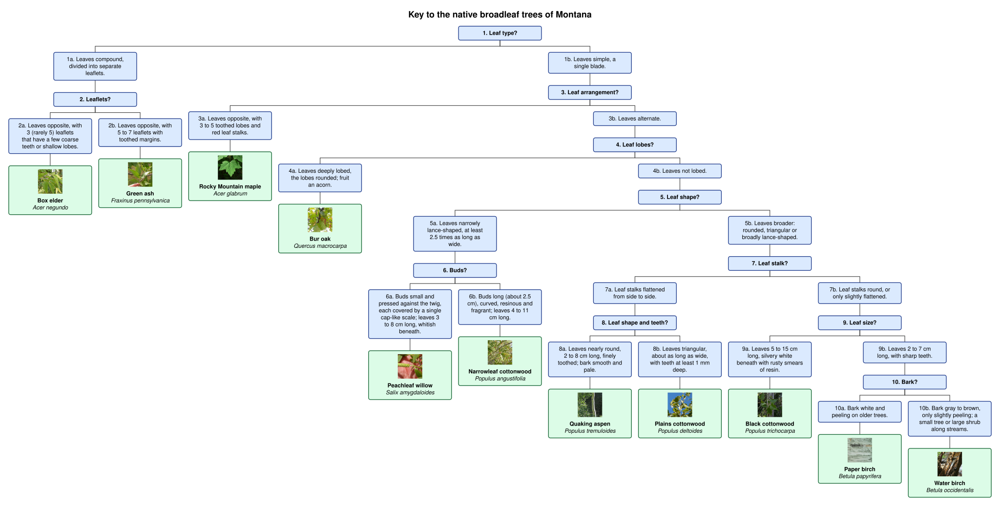

An R package to read, build, check, cut down and share dichotomous keys.
No R? Use the browser page. https://leipzig.github.io/dimoose/webr/ turns a key kept as a spreadsheet (CSV, with optional photos) into the interactive page described below. R runs inside your browser, and your files stay on your computer.
Dichotomous keys
Dichotomous keys are bifurcating trees that are often used in species identification. More precisely, dichotomous keys are binary categorical decision trees with unique leaves. They have been a staple of taxonomic identification for centuries — Lamarck’s Flore française (1778) is often credited with popularizing the form — and remain in everyday use in field guides and laboratory manuals today.
Relationship to phylogenetic trees
Despite their different uses, phylogenetic trees are similar to dichotomous keys: - the paths are traversed using mutation “decisions” instead of visible phenotypes - all points on a phylogenetic tree represent an organism that actually existed (instead of a group of possibilities)
dimoose supports phylogenetic trees in which the mutations are known, such as PhyloTree, and ships PhyloTree Build 17 (the human mitochondrial DNA phylogeny, as distributed by Haplogrep 3).
Package methods
This package provides tools to: - read keys people have already written: plain text as printed in a flora (keyFromText()), a spreadsheet (keyFromSpreadsheet()), FishBase (importFishbase()), and the keys and character matrices of SDD, DELTA, Lucid and Xper (readSDD(), readDELTA(), readLucid(), readXper() and their writers) - check a key: key$validate() for its structure, checkNames() for its species names against GBIF, and summary() / keyQuality() for how many steps it takes to reach a result - cut a key down and join keys up: pruneKey() keeps or drops taxa, regionalKey() keeps the taxa recorded in a place, mergeKeys() grafts one key onto a result of another - generate a key from a character matrix (keyFromMatrix()), with taxa that vary in a character reached down both leads, cheap characters asked first and characters limited to a season - generate keys from photos or sequences with a vision model (CLIP, BioCLIP, or any model that produces embeddings) or from a multiple sequence alignment with a phylogeny program, and follow those keys by machine - share a key as a self-contained, mobile-friendly HTML page (exportWizard(): “I’m not sure”, offline use, characters in any order), a box diagram (keyDiagram()) or a spreadsheet (keyToSpreadsheet()) - test photo identification on field photos (inatPhotos(), benchmarkKey()) - convert a key to a data.tree (key$toDataTree()), Newick, igraph, a tidytree treedata for ggtree, and Nextstrain/Auspice JSON, and read Haplogrep trees - keep provenance and guide images with the key (key$meta)
Getting started
Installation
Install dimoose from R-universe, which has ready-built versions for Windows, macOS and Linux:
install.packages("dimoose", repos = c("https://leipzig.r-universe.dev", "https://cloud.r-project.org"))The package was called moose until version 0.1.0; it was renamed because CRAN has an unrelated package of that name.
Or install the current source from GitHub:
install.packages("remotes")
remotes::install_github("leipzig/dimoose")That is enough to read, build, check and export keys. Some features use optional packages, which are only needed if you use that feature:
| Feature | Also needs |
|---|---|
Keys from a sequence alignment (keyFromAlignment()) |
ape, and phangorn for midpoint rooting, UPGMA, parsimony, maximum likelihood and proteins |
Keys from photos (visionModel(), embedImages()) |
reticulate (1.41 or later), which sets up Python and its packages on first use |
Keys from photos without PyTorch (visionModel(backend = "onnx")), saved embeddings (saveEmbeddings()) |
reticulate and jsonlite; jsonlite alone to load saved embeddings |
Regional keys and occurrence weights (regionalKey(), occurrenceWeights()), name checks (checkNames()) |
an internet connection; no extra packages |
| Diagrams as PNG or PDF, small thumbnails, the app icon of an offline key |
rsvg, magick
|
Phylogenetics exports (toTreedata(), toIgraph(), toAuspiceJSON()) |
tidytree, tibble and ape; igraph; jsonlite
|
To install all of the optional R packages at once, and build the vignettes:
remotes::install_github("leipzig/dimoose", dependencies = TRUE, build_vignettes = TRUE)A first key
library(dimoose)
sharks <- sharkKey()
summary(sharks)
exportWizard(sharks, "sharks.html") # an interactive, self-contained wizardTo write your own key in a spreadsheet, see A photo key to Montana’s broadleaf trees. To start from a key somebody else published, see From a published key to a field key. There are also vignettes on automated key generation from photos and from a sequence alignment.
Included datasets
Five example keys ship with the package. They come from very different sources and are built in different ways, but they are all ordinary dimoose objects: they share the same fields (leads, df, meta, taxa, desc) and methods (print(), summary(), validate(), toDataTree(), toNewick()) and all work with exportWizard() and the phylogenetics exports.
Sharks — sharkKey()
FishBase key 1, the Key to the families of sharks in the Western Central Pacific (Compagno 1998), parsed from saved FishBase pages in inst/extdata/fishbase/. A classic, human-authored morphological key: 23 couplets, 24 families. It carries guide-image links, so the exported wizard shows a figure at each lead. This is the key the importFishbase() / parseFishbase() machinery produces from a live or saved FishBase page.
Arachnids — arachnidaKey() (dataset arachnida)
The Key to the Orders of Arachnida from Triplehorn & Johnson (2005), Borror and DeLong’s Introduction to the Study of Insects, 7th ed., transcribed by hand (see data-raw/arachnida/). 11 couplets, 11 orders (Schizomida is reached from two couplets, so it is a small DAG rather than a strict tree). The arachnida dataset is the underlying table of leads; keyFromLeads() turns it into the key.
Vibrio — vibrioKey() (dataset vibrio)
A key generated from a biochemical consensus matrix rather than written by a person. The vibrio dataset is the identification matrix of Noguerola & Blanch (2008), 74 taxa × 45 tests (+/-/(+)/(-)/v/ND). vibrioKey() recodes it with vibrioMatrix() (+ and (+) positive, - and (-) negative, v variable, ND unknown) and builds the key with keyFromMatrix(): a 92-couplet key, up to 10 steps deep, that separates all 74 species. A species that is variable or undetermined for a test is reached down both leads of every couplet that uses the test, so 14 species turn up at two or three results (93 results in all). vibrioKey(variable = "missing") gives the earlier rpart tree instead (keyFromRpart()): 73 couplets, up to 18 steps deep, each species at one result, with variable results treated as missing. This is the template for turning any feature matrix into a dichotomous key.
PhyloTree — phylotreeKey() (datasets phylotree17, phylotree17_mutations)
PhyloTree Build 17, the human mitochondrial DNA phylogeny (van Oven 2015), as distributed by Haplogrep 3: 5,435 haplogroups and 13,384 mutations. phylotree17 is one row per haplogroup (name, parent, depth, subclade count, mutations); phylotree17_mutations is one row per mutation (position, type, ancestral/derived base). phylotreeKey() turns the tree, or any subtree, into a key whose “characters” are the defining mutations — for example phylotreeKey("H2a"). The full tree is large (2,420 steps), so a subtree or a maxDepth is usually more practical for the wizard. This is the “phylogenetic tree as a key” case, where the decisions are mutations rather than visible phenotypes.
Montana broadleaf trees — montanaKey() (dataset montana)
A key to the eleven native broadleaf (hardwood) trees of Montana, written for dimoose: 10 couplets, 11 species, each checked as native in the Montana Field Guide and USDA PLANTS, with 14 photos from Wikimedia Commons (most taken in Montana by Matt Lavin). It is kept as a plain spreadsheet, inst/extdata/montana/montana-key.csv, next to its photos, and keyFromSpreadsheet() turns it into the key, so it doubles as a template: copy the folder, edit the sheet in Excel or Google Sheets, and build your own key in one line. keyFromSpreadsheet(file, checkNames = TRUE) also checks the species names against GBIF and points out misspellings and outdated synonyms by spreadsheet row. keyDiagram() draws any key as a box diagram, and exportWizard() turns it into a page you can use on a phone: try the Montana key.

Working with keys people have written
A key from plain text
Most keys exist only as text in a flora or a paper. keyFromText() reads the usual layouts (bracketed 1a/1b, 1./1'., lettered, indented; dot leaders, wrapped lines, page headers) and builds a checked key:
file <- system.file("extdata", "textkeys", "trees-bracketed.txt", package = "dimoose")
trees <- keyFromText(file) # a file, one string, or lines of text
trees
#> <dimoose key> Key to the Broadleaf Trees of the Cottonwood Bottoms
#> 8 couplets, 16 leads, 9 taxa, up to 5 steps deep (3.6 on average)
attr(trees, "problems") # problems, repairs and notes, each with its line number
parseTextKey(file) # the lead table and the report, without building the keyA lead with no destination, a couplet with one lead or a number the scan garbled is reported with its line, and nothing is dropped. Common OCR slips (l for 1, lost dot leaders) are repaired and reported; strict = TRUE stops instead. For a bad scan, llm = takes a function of your own that makes a first pass with a language model; its answer is checked against the source. dimoose calls no model itself.
A regional key: the trees of Flathead County in one line
flathead <- regionalKey(montanaKey(), "Flathead County, Montana", kingdom = "Plantae")
#> Kept 10 of 11 taxa recorded in Flathead, Montana, United States (GADM USA.27.15_1) (GBIF)
attr(flathead, "records") # every taxon, its record count and whether it was keptregionalKey() asks GBIF (or iNaturalist, with source = "inat") which of the key’s taxa have been recorded in a place, drops the others and closes up the couplets that no longer split anything. (Not run here: it needs the internet. On 19 November 2026 GBIF had no bur oak record from the county, so the key lost one species and one couplet.) pruneKey(key, keep = "Populus") does the same from a list of names, and mergeKeys(families, genera, at = "Salicaceae") grafts a second key onto a result of the first. The character of a couplet that was closed up is kept in a Note column of the leads.
Exchange with SDD, DELTA, Lucid and Xper
dimoose reads and writes the formats other identification software uses: SDD, the TDWG standard (readSDD() / writeSDD() for a matrix, readSDDKey() / writeSDDKey() for a key), DELTA (readDELTA() / writeDELTA()), Lucid (readLucid() / writeLucid() for matrix keys, readLucidKey() / writeLucidKey() for pathway keys) and Xper2/Xper3 through their SDD export (readXper() / writeXper()). Every matrix reader returns the same list, and its $matrix goes straight into keyFromMatrix():
d <- readDELTA(system.file("extdata", "tdwg", "beetles-delta", package = "dimoose"))
d$matrix[1:4]
#> Taxon antennal club pronotum eyes
#> 1 Aphodius exemplaris present black/yellow of normal size
#> 2 Carabus fictus absent red/black very large
#> 3 Lucanus imaginarius present black of normal size
key <- keyFromMatrix(d$matrix)
writeSDD(d, "beetles.sdd.xml", key = key) # the matrix and the key in one SDD file
writeLucid(d, "beetles.csv") # for the Lucid BuilderThe files dimoose writes have not yet been opened in Lucid, Xper or a DELTA program; the help pages say what each format can and cannot carry.
How good is a key?
montanaKey()
#> <dimoose key> Key to the native broadleaf trees of Montana
#> 10 couplets, 20 leads, 11 taxa, up to 7 steps deep (4.6 on average)
summary(montanaKey())[c("meanTaxonSteps", "expectedSteps", "bound", "efficiency")]
keyQuality(montanaKey())$taxa # steps to reach each taxonbound is the average number of steps the best possible key to the same taxa would need, and efficiency is that bound over the steps this key takes. A key that reaches common species quickly is better than its plain average says: summary(key, weights = occurrenceWeights(key, region = "USA.27_1", kingdom = "Plantae")) weights each taxon by its GBIF records in a region, here Montana (not run here: needs the internet). Real keys rarely reach an efficiency of 1, because the characters that would split the taxa evenly may not exist; use it to compare keys to the same taxa.
Edit any key in a spreadsheet
csv <- keyToSpreadsheet(sharkKey(), "sharks/key.csv") # the CSV keyFromSpreadsheet() reads
# ... edit it in Excel or Google Sheets ...
key <- keyFromSpreadsheet(csv, desc = "Sharks")Photos embedded in the key are written beside the CSV. Only the template’s seven columns are written: the title, the citation and links to taxon pages are not.
The interactive page
exportWizard(key, "key.html") writes one HTML file that asks one couplet at a time, with a trail, Back and a map of the key. Without JavaScript it reads as a plain key.
- “I’m not sure.” Every couplet has this choice. It follows all the leads; the page keeps the branches that are still open, counts the taxa still possible and lists the candidates at the end.
-
Offline.
exportWizard(key, "key.html", offline = TRUE)also writes a web app manifest, a service worker and two icons. Put all five files in one folder of anhttpssite, open the page once, and it can be installed on a phone and opened without signal. This has been tested with a simulated browser, not yet on a phone. -
Any character first.
exportWizard(key, "key.html", matrix = m, characters = ch)adds a list of the matrix’s characters to answer in any order, cheapest first; a taxon that varies in a character fits either state.exportWizard(NULL, "key.html", matrix = m)makes that page with no key at all. -
From a photo.
exportWizard(key, "key.html", photoModel = dir), withdira folder written byexportBrowserModel()for the same key, adds an “Identify from a photo” button. The model runs in the reader’s browser, so the photo never leaves the device; the page marks the likely taxa and offers to narrow the key to them. The photo is a hint and the key stays the authority. The model is a large download (an int8 BioCLIP encoder is about 90 MB), fetched only when the reader agrees to it. See?exportWizard.
Automated key generation
Most keys are written by people. dimoose can also generate one from data: from a character matrix, a multiple sequence alignment, or a pile of photos. Either way the result is an ordinary dimoose key that works with exportWizard(), classify() and the phylogenetics exports.
From a character matrix
A matrix has one row per taxon and one column per character. "/" separates the states of a taxon that varies, and NA means unknown:
trees <- data.frame(
Taxon = c("Box elder", "Green ash", "Paper birch", "Water birch"),
Leaves = c("compound", "compound", "simple", "simple"),
Leaflets = c("3/5", "5/7", NA, NA),
Bark = c("furrowed", "furrowed", "white, peeling", "coppery, not peeling"))
key <- keyFromMatrix(trees)
key$leads[c("Statement", "Character", "Next", "Taxon")]
#> Statement Character Next Taxon
#> 1 1 Leaves: compound 2
#> 2 1 Leaves: simple 4
#> 3 2 Leaflets: 3 - Box elder
#> 4 2 Leaflets: 5 or 7 3
#> 5 3 Leaflets: 5 - Box elder / Green ash
#> 6 3 Leaflets: 7 - Green ash
#> 7 4 Bark: white, peeling - Paper birch
#> 8 4 Bark: coppery, not peeling - Water birchBox elder has three or five leaflets, so it is reached down both leads of couplet 2, and a leaf with five, which could be either tree, ends at both names. An optional table of characters says what each one costs to observe and when it can be seen; cheap characters are asked first, and season leaves out the ones that are not there:
chars <- data.frame(Character = c("Leaves", "Leaflets", "Bark"),
Cost = c(1, 1, 2), Season = c("summer", "summer", ""))
keyFromMatrix(trees, characters = chars, season = "winter")$leads[c("Character", "Taxon")]
#> Character Taxon
#> 1 Bark: furrowed Box elder / Green ash
#> 2 Bark: white, peeling or coppery, not peeling
#> 3 Bark: white, peeling Paper birch
#> 4 Bark: coppery, not peeling Water birchgenerateTree() and keyFromRpart() fit an rpart classification tree instead.
From a multiple sequence alignment
One command takes aligned sequences to a key. A phylogeny program builds the tree, dimoose roots it, and every fork becomes a couplet whose leads are the alignment sites that tell its two sides apart:
library(dimoose)
fasta <- system.file("extdata", "aligned.fasta", package = "dimoose") # or the path of your own FASTA file
key <- keyFromAlignment(fasta)
exportWizard(key, "key.html")
head(key$leads[, c("Statement", "Character", "Next", "Taxon")], 4)
#> Statement Character Next Taxon
#> 1 1 106G 35G 2
#> 2 1 106A 35A 3
#> 3 2 201T 234C 297G - No305
#> 4 2 201C 234T 297A - No1114Saligned.fasta is an example that ships with dimoose: 15 wood mouse cytochrome b sequences. A second one, mtdna.fasta, has whole human mitochondrial genomes for 14 haplogroups. Numbered by the sequence of the rCRS’s haplogroup and rooted on L0, its key asks about the familiar PhyloTree positions:
mtdna <- system.file("extdata", "mtdna.fasta", package = "dimoose")
mt <- keyFromAlignment(mtdna, reference = "H2a2a1", outgroup = "L0a1")
mt$leads[7:8, c("Statement", "Character", "Next")]
#> Statement Character Next
#> 7 4 8701A 9540T 10873T 5
#> 8 4 8701G 9540C 10873C 12Options:
-
The phylogeny program is chosen with
tool:"nj"(the default) and"bionj"useape;"upgma","parsimony"and"ml"usephangorn;"fasttree"and"iqtree"run the FastTree or IQ-TREE program if it is installed. -
A tree from any other program goes in as
tree = "my.nwk"(a Newick file). -
The root is the
outgroupyou name, or the midpoint. -
Site numbers are alignment columns, or positions in a
referencesequence. -
New sequences are placed with
classify(key, alignmentScores(key, new)).
See the alignment vignette.
From a pile of photos
A key built from the example photos, followed in the wizard that exportWizard() writes. Each choice asks about one sniglet and shows crops of it. (Full-quality video)
You need photos, and a label for each one saying what it shows. The photos are embedded with a vision model (CLIP ViT-B/32 by default) that runs in Python, but there is nothing to install by hand: the first visionModel() call sets up a private Python with the packages it needs (through reticulate, 1.41 or later) and reuses it afterwards. That first call downloads several gigabytes, mostly PyTorch. For a much smaller install, or none, see a lighter setup.
Then it is five steps. They run as written on the example photos that ship with dimoose: 36 small photos of six fruits, from the Fruits-360 dataset (CC BY-SA 4.0). For your own photos, give the path of your folder instead.
library(dimoose)
# 1. Photos and labels. With one folder per class (pics/banana/..., pics/kiwi/...),
# each photo is labelled by its folder.
pics <- system.file("extdata", "pics", package = "dimoose")
images <- imageSet(pics)
# Class in the file name: imageSet("my_photos", label = function(x) sub("_.*$", "", x))
# Labels in a table: imageSet(tab$file, label = tab$species)
# 2. A vision model
model <- visionModel() # regular CLIP; for organisms, visionModel(name = "bioclip")
# 3. Photos -> embeddings: one for each photo, and one for each of 4 x 4
# overlapping tiles of it, so that features are local parts of the photo
emb <- embedImages(model, images)
# 4. Generate sniglets (kinds of region that recur across photos, each given a
# coined name) and grow a key on them
sniglets <- discoverSniglets(emb$patches, k = 40)
scores <- snigletScores(emb$patches, sniglets$centroids)
key <- keyFromSniglets(scores, images, sniglets, method = "rpart")
# 5. Add example crops and export an interactive page
key <- patchExemplars(model, key, images)
exportWizard(key, "key.html")
# Identify a new photo with the key
new <- list.files(system.file("extdata", "new-photos", package = "dimoose"), full.names = TRUE)
classify(key, scoreImages(key, model, new))With one photo per class, use the default method = "balanced" in step 4 (the fordera method).
Sniglets, and renaming them
The features in step 4 are found by the model, by clustering the tiles of all the photos: each one is a kind of region that several photos have in common, such as a rough skin or a stem end. They have no names, so dimoose coins a pronounceable word for each one (gaithiark, glienglaund) and calls these sniglets. Both leads of a couplet describe something: one reads “Has glienglaund” and the other, where it can, says what those photos have instead (“Lacks glienglaund; has laussym”). The wizard shows example tiles on both leads, taken from every class that follows that lead. Once you have looked at them, give the sniglets real names:
snigletNames(key) # coined word, current name, definition, used by the key?
key <- renameSniglets(key, c(gaithiark = "a dull, finely textured skin"),
definitions = c(gaithiark = "Matt skin with a fine grain, as on a kiwi or a lemon"))
# or name them in a spreadsheet
write.csv(snigletNames(key), "names.csv", row.names = FALSE) # fill in name and definition
key <- renameSniglets(key, "names.csv")
exportWizard(key, "key.html") # leads now read "Has a dull, finely textured skin"The coined word stays as the sniglet’s permanent identifier: scores, machine tests and saved name tables keep working after a rename, and a blank name puts the coined word back. Only the names of sniglets the key uses matter.
Questions from a vocabulary
To ask questions in plain words from the start, give a vocabulary of contrasting features instead:
vocab <- data.frame(feature = c("a smooth skin", "a round shape", "a yellow colour", "green leaves on top"),
opposite = c("a rough skin", "a long shape", "a dark colour", "no leaves"))
txt <- embedTexts(model, vocabularyPrompts(vocab, "a photo of a fruit with {x}"))
qkey <- keyFromClusters(emb$image, images, vocab, txt, template = "a photo of a fruit with {x}")The photo vignette explains each step, and how to measure a key’s accuracy.
Choosing a model: CLIP or BioCLIP
The model is chosen in step 2, by the name you give visionModel():
| Your photos | Model | Call | First download |
|---|---|---|---|
| Anything: objects, products, vehicles, mixed subjects | CLIP ViT-B/32 (OpenAI), the default | visionModel() |
about 350 MB |
| Organisms: plants, animals, fungi, specimens | BioCLIP | visionModel(name = "bioclip") |
about 600 MB |
| Organisms, when accuracy matters more than speed | BioCLIP 2 | visionModel(name = "bioclip-2") |
about 1.7 GB |
For example, to build the key above with BioCLIP, replace step 2 with:
model <- visionModel(name = "bioclip")-
Only that one line changes.
embedImages(),discoverSniglets(),keyFromSniglets(),patchExemplars()andexportWizard()are called the same way with every model. -
Build and follow a key with the same model. The key records which model made it, and
scoreImages()warns, or stops, if you give it a different one. -
With BioCLIP, use sniglets. Its text side was trained on names of organisms, not on descriptions of what they look like, so vocabulary questions (
keyFromClusters()) work better with regular CLIP. - BioCLIP 2 is a larger model, so embedding takes several times longer.
BioCLIP 2 also recognises many species from their scientific name alone, with no example photos. suggestSpecies() uses this to check a photo against a key you already have: it ranks only the key’s own species, which is far more reliable than asking the model to pick from every species it knows.
model <- visionModel(name = "bioclip-2")
suggestSpecies(montanaKey(), model, "my-tree.jpg") # the 3 best of the key's 11 species, with probabilitiesidentifyPhotos() gives one answer per photo instead, and steps up to the genus, family or order (from GBIF) when no single species is likely enough: a cottonwood it cannot place between the key’s two cottonwoods comes back as genus Populus.
Other models: name = "hf-hub:<organisation>/<model>" loads any open_clip model on the Hugging Face Hub whose image side is a vision transformer, and name = "local-dir:<folder>" loads a copy you have downloaded.
No Python at all: the R side works on plain matrices, so if you already have embeddings from some other encoder, pass them straight to discoverSniglets(), keyFromSniglets(), keyFromClusters() and featureScores().
A lighter setup: ONNX and saved embeddings
Without PyTorch.
visionModel(backend = "onnx")runs the same CLIP ViT-B/32 on ONNX Runtime, a much smaller Python install, and gives the same embeddings: on the 36 example photos the key above comes out the same.precision = "fp16"or"int8"picks a smaller copy of the model. BioCLIP has no ready-made ONNX copy; convert it once withexportOnnxModel("bioclip")on a computer that has PyTorch, then usevisionModel(name = "bioclip", backend = "onnx")anywhere.-
Without Python. Embed once and keep the result:
saveEmbeddings(embedImages(model, images), "pics.safetensors") emb <- loadEmbeddings("pics.safetensors") # needs only jsonlitediscoverSniglets(),snigletScores()andkeyFromSniglets()then run as in step 4. In a browser.
exportBrowserModel(key, model, dir)writes an image encoder and the embedded names of a key’s species, the files a web page needs to rank those species for a photo on the visitor’s own device.
Suggested names for sniglets
suggestSnigletNames() shows a vision-language model each sniglet’s example crops and returns the table renameSniglets() takes, so naming becomes reviewing suggestions:
suggestSnigletNames(key, claudeNamer(), file = "names.csv") # after patchExemplars()
# ... review names.csv ...
key <- renameSniglets(key, "names.csv")The model is any function(images, prompt) that returns text. claudeNamer() makes one for the Anthropic API; it needs an ANTHROPIC_API_KEY, its calls are billed to that key, and it has not yet been run against the live API (the snippet above was run with a stand-in model). Names are kept short and distinct, and a name that contains a class or species name is refused.
How well does it do on field photos?
photos <- inatPhotos(montanaKey(), n = 20, dir = "~/inat-photos") # research-grade, openly licensed; writes manifest.csv
model <- visionModel(name = "bioclip-2")
benchmarkKey(montanaKey(), photos, model) # species ranked from their names
benchmarkKey(model, photos) # a photo key built from 70% of the observations, tested on the restA first run is in analysis/inat-benchmark/: 220 iNaturalist photos, 20 for each of the eleven Montana species, with BioCLIP 2, on 19 November 2026.
| Route | Test photos | Top-1 | Top-2 |
|---|---|---|---|
| names: the key’s eleven species ranked from their scientific names | 220 | 97.3% (214) | 100% |
| build: a sniglet key built from 154 training photos | 66 | 71.2% (47) | n/a |
Read the limits before quoting these numbers. It is one run on one small sample, with one split and one model. BioCLIP 2 has very likely seen photos like these, perhaps these very ones, so 97% is an upper estimate of what to expect on your own photos. The model only had to choose among the key’s own eleven species, the photos are research-grade observations from the species’ whole range and not from Montana, and 101 of the 220 were taken in June. The benchmark’s README has the full list.
Mixed-effects conditional inference trees
mecit(), keyFromMecit() and simulateExpression() now live in the companion package mecit; haplotypeMatrix(), recurrentPositions() and macroHaplogroup(), which turn PhyloTree haplogroups into the 0/1 site matrix those trees split on, are still here.
Interoperating with phylogenetics tools
A dimoose key is a tree, so it can be handed to the usual phylogenetics software:
k <- phylotreeKey("H2a")
toNewick(k) # quoted Newick, or labels = "safe" + a sidecar table
toNewick(k, annotate = "nhx") # lead text as NHX/BEAST comments
toTreedata(k) # a tidytree treedata for ggtree
toIgraph(k) # a DAG-faithful igraph (keeps shared couplets)
toAuspiceJSON(k) # Nextstrain/Auspice v2 JSON
readHaplogrep("tree.xml") # load any Haplogrep / PhyloTree tree XMLRelated software
Lucid, Xper3 and the DELTA programs build and run interactive keys from character matrices; dimoose reads and writes their exchange formats rather than replacing them. In R, rfishbase gives FishBase’s data tables and taxize resolves taxonomic names; dimoose imports FishBase’s keys and checks a key’s names against GBIF.
Citing and contributing
To cite dimoose, run citation("dimoose"). Bug reports, keys that fail to import and pull requests are welcome: see CONTRIBUTING.md.
Acknowledgments
dimoose stores keys as an R6 object over a lead table, uses data.tree and rpart for its trees, and bridges to ape, tidytree and igraph.
FishBase key import is made possible by the work of Scott Chamberlain and Carl Boettiger on rOpenSci’s rfishbase and the R tooling for FishBase data.
The bundled PhyloTree Build 17 is taken from Haplogrep, whose tree files and documentation of PhyloTree’s notation made the PhyloTree key possible. Thanks to the Haplogrep authors (Schönherr, Weissensteiner, and others) at the Institute of Genetic Epidemiology, Medical University of Innsbruck and to Mannis van Oven for PhyloTree itself.
The image-based key work builds on the Imageomics Institute and the NSF HDR-BGNN (Harnessing the Data Revolution — Biology-Guided Neural Networks) effort, whose BioCLIP and TreeOfLife models make domain-specific biological embeddings possible.
Dimoose was built in Whitefish, Montana. The moose depicted in the logo is named Dichotomoose.